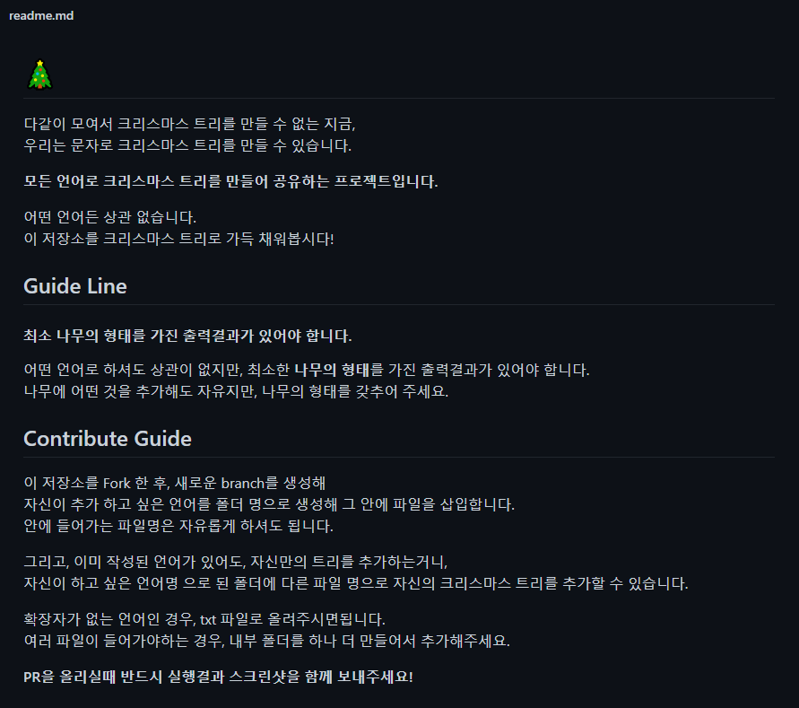
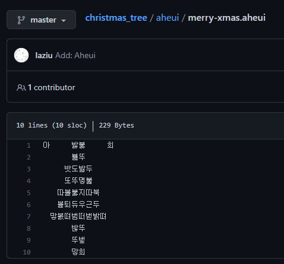
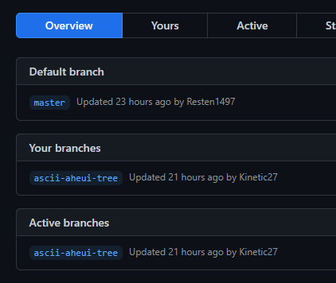
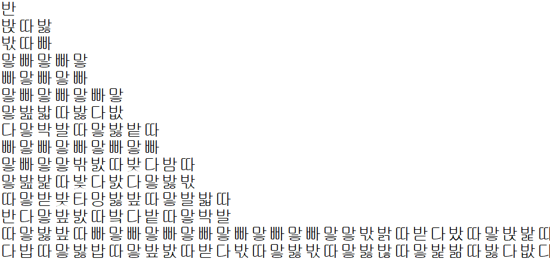
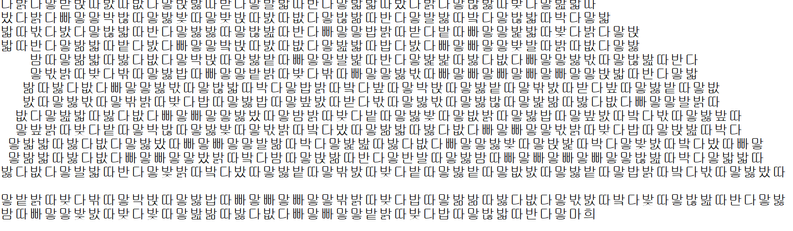
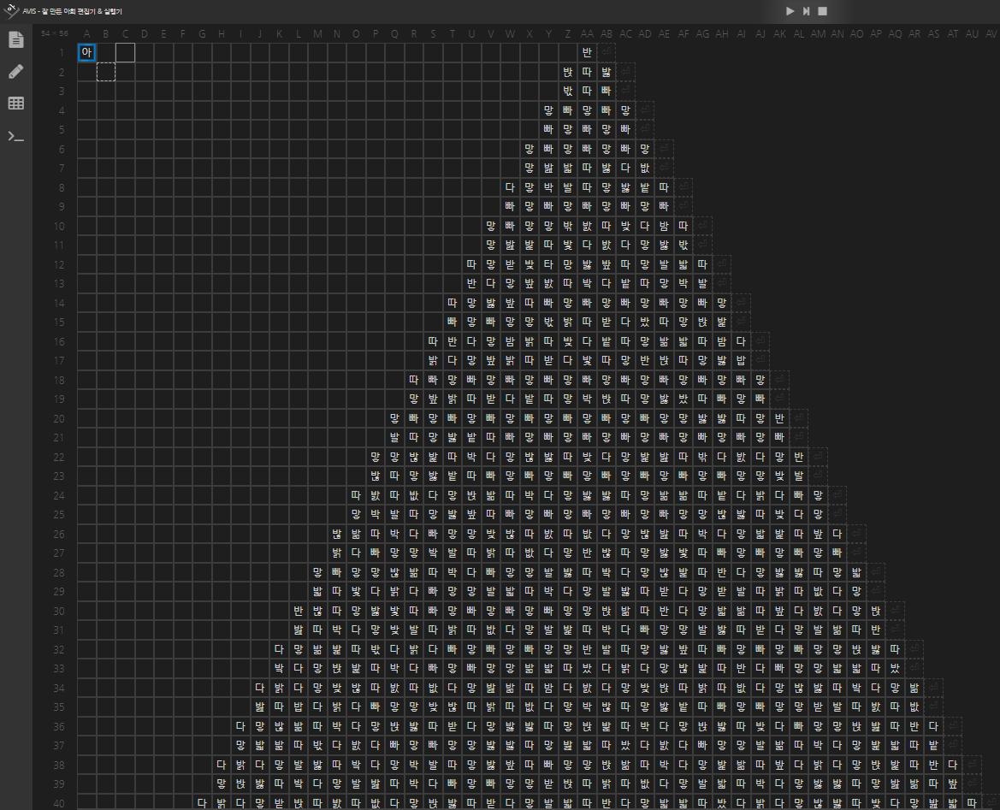

<!doctype html>
<html lang="ko"><head><meta charset="utf-8"><meta name="generator" content="Hexo 4.2.1"><meta name="naver-site-verification" content="4f3c8ad54fee3ab0c7a2b2d015ddd047245accd5"><meta name="viewport" content="width=device-width, initial-scale=1, maximum-scale=1"><meta><link rel="stylesheet" href="https://cdn.jsdelivr.net/npm/font-awesome/css/font-awesome.min.css"><script src="/live2d/load2d.js"></script><title>&#039;christmas-tree&#039; 레포에 아희 묻히기 - Kinetic&#039;s BLOG</title><meta property="og:image" content="https://kinetic.codes//2020/12/12/christmas-tree/thumbnail.png"><meta description="다양한 언어로 크리스마스 트리를 만들어보자"><meta property="og:type" content="blog"><meta property="og:title" content="&#039;christmas-tree&#039; 레포에 아희 묻히기"><meta property="og:url" content="http://kinetic27.github.io/"><meta property="og:site_name" content="Kinetic&#039;s BLOG"><meta property="og:description" content="다양한 언어로 크리스마스 트리를 만들어보자"><meta property="og:locale" content="ko_KR"><meta property="og:image" content="http://kinetic27.github.io/2020/12/12/christmas-tree/thumbnail.png"><meta property="article:published_time" content="2020-12-12T13:16:36.000Z"><meta property="article:modified_time" content="2020-12-16T12:02:30.307Z"><meta property="article:author" content="Kinetic"><meta property="article:tag" content="github"><meta property="article:tag" content="pr_practice"><meta property="article:tag" content="repo"><meta property="twitter:card" content="summary"><meta property="twitter:image" content="/2020/12/12/christmas-tree/thumbnail.png"><meta property="twitter:creator" content="@dev_kinetic"><meta property="twitter:site" content="dev_kinetic"><script type="application/ld+json">{"@context":"https://schema.org","@type":"BlogPosting","mainEntityOfPage":{"@type":"WebPage","@id":"http://kinetic27.github.io/2020/12/12/christmas-tree/"},"headline":"Kinetic's BLOG","image":["http://kinetic27.github.io/2020/12/12/christmas-tree/thumbnail.png"],"datePublished":"2020-12-12T13:16:36.000Z","dateModified":"2020-12-16T12:02:30.307Z","author":{"@type":"Person","name":"Kinetic27"},"description":"다양한 언어로 크리스마스 트리를 만들어보자"}</script><link rel="canonical" href="http://kinetic27.github.io/2020/12/12/christmas-tree/"><link rel="alternative" href="/rss2.xml" title="Kinetic&#039;s BLOG" type="application/atom+xml"><link rel="icon" href="/images/fav.ico"><link rel="stylesheet" href="https://use.fontawesome.com/releases/v5.12.0/css/all.css"><link rel="stylesheet" href="https://cdn.jsdelivr.net/npm/highlight.js@9.12.0/styles/xt256.css"><link rel="stylesheet" href="/css/cyberpunk.css"><style>body>.footer,body>.navbar,body>.section{opacity:0}</style><!--!--><!--!--><script src="//busuanzi.ibruce.info/busuanzi/2.3/busuanzi.pure.mini.js" defer></script><!--!--><link rel="stylesheet" href="https://cdn.jsdelivr.net/npm/lightgallery@1.6.8/dist/css/lightgallery.min.css"><link rel="stylesheet" href="https://cdn.jsdelivr.net/npm/justifiedGallery@3.7.0/dist/css/justifiedGallery.min.css"><script src="https://www.googletagmanager.com/gtag/js?id=UA-155063421-1" async></script><script>window.dataLayer = window.dataLayer || [];
        function gtag(){dataLayer.push(arguments);}
        gtag('js', new Date());
    
        gtag('config', 'UA-155063421-1');</script><!--!--><!--!--><!--!--><script src="https://cdn.jsdelivr.net/npm/pace-js@1.0.2/pace.min.js"></script></head><body class="is-2-column"><script type="text/javascript" src="/js/imaegoo/night.js"></script><canvas id="universe"></canvas><nav class="navbar navbar-main"><div class="container"><div class="navbar-brand justify-content-center"><a class="navbar-item navbar-logo" href="/"></a></div><div class="navbar-menu"><div class="navbar-start"><a class="navbar-item" href="/">Home</a><a class="navbar-item" href="/archives">Archives</a><a class="navbar-item" href="/categories">Categories</a><a class="navbar-item" href="/tags">Tags</a><a class="navbar-item" href="/about">About</a><a class="navbar-item" href="/donations">Donations</a><a class="navbar-item" href="/pages">Pages</a></div><div class="navbar-end"><a class="navbar-item night" id="night-nav" title="Night Mode" href="javascript:;"><i class="fas fa-moon" id="night-icon"></i></a><a class="navbar-item" target="_blank" rel="external nofollow noopener noreferrer" title="GitHub" href="https://github.com/kinetic27"><i class="fab fa-github"></i></a><a class="navbar-item is-hidden-tablet catalogue" title="카탈로그" href="javascript:;"><i class="fas fa-list-ul"></i></a><a class="navbar-item search" title="검색" href="javascript:;"><i class="fas fa-search"></i></a></div></div></div></nav><section class="section"><div class="container"><div class="columns"><div class="column order-2 column-main is-8-tablet is-8-desktop is-8-widescreen"><div class="card"><div class="card-image"><span class="image is-7by3"></span></div><article class="card-content article" role="article"><div class="article-meta size-small is-uppercase level is-mobile"><div class="level-left"><time class="level-item" datetime="2020-12-12T13:16:36.000Z" title="2020-12-12T13:16:36.000Z">2020-12-12</time><span class="level-item"><a class="link-muted" href="/categories/git-gitpage/">Git &amp; GitPage</a><span> / </span><a class="link-muted" href="/categories/git-gitpage/recommended/">Recommended</a></span><span class="level-item">35분 읽기 (대략 5286 단어)</span><span class="level-item" id="busuanzi_container_page_pv"><i class="far fa-eye"></i>&nbsp;&nbsp;<span id="busuanzi_value_page_pv">0</span>명이 읽음</span></div></div><h1 class="title is-3 is-size-4-mobile">&#039;christmas-tree&#039; 레포에 아희 묻히기</h1><div class="content"><p>다양한 언어로 크리스마스 트리를 만들어보자</p>
<a id="more"></a>
<hr>
<h1 id="christmas-tree"><a href="#christmas-tree" class="headerlink" title="christmas-tree"></a>christmas-tree</h1><p>카톡에서 Resten 개발자님이 보내주신 재밌는 레포를 보게 되었습니다.</p>
<p>이전에 작성했던 글에서 소개한 <a href="https://kinetic.codes/2020/08/18/i-want-go-home/" rel="external nofollow noopener noreferrer" target="_blank">i-want-go-home</a>과 같은 다양한 언어로 출력문, 코드를 작성하는 레포입니다.</p>
<p><a href="https://github.com/Resten1497/christmas_tree" rel="external nofollow noopener noreferrer" target="_blank">레포 링크</a></p>
<p>Readme에 레포를 사용하는 방법이 잘 나와있습니다.</p>
<p></p>
<hr>
<h1 id="작성할-언어를-정해보자"><a href="#작성할-언어를-정해보자" class="headerlink" title="작성할 언어를 정해보자"></a>작성할 언어를 정해보자</h1><p>저는 우선 제가 좋아하는 언어인 <code>아희</code>를 사용하여 작성을 해보려고 했습니다.<br>하지만 이미 빠르게 아희로 PR을 넣으신 분이 계셨습니다.  </p>
<p></p>
<p>하지만 가이드라인에서 알 수 있듯이 </p>
<blockquote>
<p>그리고, 이미 작성된 언어가 있어도, 자신만의 트리를 추가하는거니,<br>자신이 하고 싶은 언어명 으로 된 폴더에 다른 파일 명으로 자신의 크리스마스 트리를 추가할 수 있습니다.</p>
</blockquote>
<p>이미 언어가 작성되어있어도 자신만의 트리 파일을 추가 할 수 있다고 합니다.</p>
<p>저는 그래서 아희 언어를 사용하여 PR을 넣어보려 했습니다.</p>
<hr>
<h1 id="fork-고고"><a href="#fork-고고" class="headerlink" title="fork 고고"></a>fork 고고</h1><p>우선 가이드라인대로 <code>Fork</code>를 한 뒤 새로운 <code>branch</code>를 하나 만들어줬습니다.</p>
<p></p>
<p>이제 코드를 작성한 후 해당 레포의 <code>aheui</code> 폴더에 아희 코드 파일을 추가한 후 PR을 넣으면 끝입니다.</p>
<hr>
<h1 id="아희-베이스-작성"><a href="#아희-베이스-작성" class="headerlink" title="아희 베이스 작성"></a>아희 베이스 작성</h1><p>이번에 해볼 것은 아희 코드로 크리스마스 트리 <a href="https://ko.wikipedia.org/wiki/%EC%95%84%EC%8A%A4%ED%82%A4_%EC%95%84%ED%8A%B8" rel="external nofollow noopener noreferrer" target="_blank">아스키 아트</a>를 출력하는 코드 만든 다음,<br>진짜 트리 모양으로 코드를 변형해보려고 합니다.</p>
<p>먼저 검색을 통해서 크리스마스 트리 모양 아스키 아트 텍스트를 찾아봤습니다.</p>
<figure class="highlight plain"><table><tr><td class="gutter"><pre><span class="line">1</span><br><span class="line">2</span><br><span class="line">3</span><br><span class="line">4</span><br><span class="line">5</span><br><span class="line">6</span><br><span class="line">7</span><br><span class="line">8</span><br><span class="line">9</span><br><span class="line">10</span><br><span class="line">11</span><br><span class="line">12</span><br><span class="line">13</span><br><span class="line">14</span><br><span class="line">15</span><br><span class="line">16</span><br><span class="line">17</span><br><span class="line">18</span><br></pre></td><td class="code"><pre><span class="line">         _</span><br><span class="line">      |\ 0 &#x2F;|</span><br><span class="line">       |&#x2F;|\|</span><br><span class="line">         |</span><br><span class="line">         @</span><br><span class="line">        &#x2F;+\</span><br><span class="line">     +&#x2F;&#x2F;o&#x2F;\\o</span><br><span class="line">     &#x2F;&#x2F;+&#x2F;@\\&#x2F;+o</span><br><span class="line">    &#x2F;\&#x2F;o&#x2F;&#x2F;+&#x2F;\\\\</span><br><span class="line">   +&#x2F;&#x2F;&#x2F;\&#x2F;&#x2F;\o\o+\\o</span><br><span class="line">  o&#x2F;+@&#x2F;++&#x2F;\\\@\\&#x2F;\+</span><br><span class="line"> &#x2F;\&#x2F;+&#x2F;&#x2F;&#x2F;o&#x2F;@\o+&#x2F;\+\\</span><br><span class="line">o&#x2F;+&#x2F;\&#x2F;@&#x2F;&#x2F;||\&#x2F;\\o\\\o _</span><br><span class="line"> &#x2F;__ &#x2F;|  ||      &#x2F;__ &#x2F;|</span><br><span class="line">| * | | (__)___ | * | |</span><br><span class="line">|___|&#x2F;_   &#x2F;__ &#x2F;||___|&#x2F;</span><br><span class="line">    &#x2F;_&#x2F;| | * | |</span><br><span class="line">   |_|&#x2F;  |___|&#x2F;</span><br></pre></td></tr></table></figure>

<p>이제 아희로 해당 아스키 아트를 출력하는 코드를 먼저 작성할 차례인데…<br>너무 깁니다.  </p>
<p>아희 언어의 특성상 <code>2~9의 숫자와 사칙연산 + 나머지연산</code>으로 뽑아낸 값에 해당하는 코드포인트의 유니코드 문자를 UTF-8로 출력하기 때문에 긴 출력문을 만드려면 상당한 노력이 필요합니다.  </p>
<p>하지만 이를 편하게하기 위해서 제가 만들어뒀던 툴이 있습니다.</p>
<p>플레이스토어에 배포해두었던 <a href="https://play.google.com/store/apps/details?id=kr.co.kinetic27.aheuiro&hl=ko" rel="external nofollow noopener noreferrer" target="_blank">AheuiRo</a> 앱 입니다. </p>
<p>저 아스키 텍스트를 <code>AheuiRo</code>앱에 돌려서 먼저 모양을 고려하지 않고 한 방향으로 작성된 아희 출력문을 얻어옵니다.</p>
<figure class="highlight plain"><table><tr><td class="gutter"><pre><span class="line">1</span><br></pre></td><td class="code"><pre><span class="line">반밙따밣밗따빠맣빠맣빠맣빠맣빠맣빠맣빠맣빠맣빠맣맣밢밟따밣다밦다맣박발따맣밣밭따빠맣빠맣빠맣빠맣빠맣빠맣맣밖밠따밪다밤따맣밢밡따밫다밠다맣밣밗따맣받밪타망밣밮따맣발밟따반다맣밮밠따밬다밭따맣박발따맣밣밮따빠맣빠맣빠맣빠맣빠맣빠맣빠맣맣밗밝따받다밨따맣밙밡따반다맣밤밝따밪다밭따맣밞밟따밤다밝다맣밮밝따받다밫따맣반밙따맣밣밥따빠맣빠맣빠맣빠맣빠맣빠맣빠맣빠맣빠맣맣밮밝따받다밭따맣박밙따맣밣밨따빠맣빠맣빠맣빠맣빠맣빠맣빠맣빠맣빠맣맣밣밣따맣반발따맣밣밭따빠맣빠맣빠맣빠맣빠맣빠맣빠맣빠맣맣밚밡따박다맣밚밣따밪다맣밡밢따밖다밠다맣반밚따맣밣밭따빠맣빠맣빠맣빠맣빠맣빠맣빠맣맣밪발따밠따밦다맣밙밞따박다맣밣밣따맣밞밞따밭다밝다빠맣맣박발따맣밣밮따빠맣빠맣빠맣빠맣빠맣맣밚밣따밪다맣밚밞따박다빠맣맣밪밚따밠따밦다맣밚밢따박다맣밟밡따밮다밝다빠맣맣밬발따밝따밦다맣반밚따맣밣밫따빠맣빠맣빠맣빠맣빠맣맣밚밞따박다빠맣맣발밣따밬다맣밚밡따반다맣밣밣따맣밟밟따밫다밝다빠맣맣발밟따박다맣발밣따받다맣받발따밝따밦다맣반밚따맣밣밫따빠맣빠맣빠맣빠맣맣밙밞따반다맣밟밞따밮다밠다맣밙밢따박다맣밪발따밝따밦다맣발밡따박다빠맣맣발밣따받다맣발밞따반다맣밞밡따밗다밝다빠맣빠맣빠맣맣반발따맣밣밮따빠맣빠맣빠맣맣밙밣따밬다맣밙밡따박다빠맣빠맣맣밞밟따밨다밝다맣밚밡따반다빠맣맣밟밟따밨다밝다맣밪밚따밠따밦다맣밢밞따밤다밠다맣밪밙따밝따밦다맣밚밣따밬다맣밞밢따밥다밝다빠맣맣밪밚따밝따밦다맣박밚따맣밣밭따빠맣빠맣맣받발따밠따밦다맣밚밞따박다맣밙밣따받다맣밣밣따맣밙밡따박다맣밙밣따밪다빠맣맣밙밢따반다맣밟밞따밗다밠다빠맣빠맣맣밣밣따맣밢밟따밨다밠다빠맣맣발밞따박다맣밡밟따밭다밝다맣발밣따밬다맣박발따맣밣밮따빠맣맣밙밞따박다맣밡밞따밮다밝다맣밙밡따반다맣밙밣따밬다맣발밢따박다빠맣빠맣맣받밙따밝따밦다맣발밟따박다맣밣밣따맣밢밞따밮다밝다맣받밙따밠따밦다맣밙밣따받다맣발밟따반다맣밟밟따밨다밝다맣밚밣따밪다맣밢밟따밨다밝다빠맣맣박밚따맣밣밫따맣밪밙따밠따밦다맣밚밞따반다맣발밣따밬다맣밚밟따박다맣밟밟따밗다밠다맣밚밟따반다맣밣밣따맣밚밢따반다빠맣맣밥밝따받다밭따빠맣맣밡밟따밫다밝다맣밙밟따반다맣밞밟따밭다밠다빠맣맣밬밙따밠따밦다맣밢밟따밥다밠다빠맣빠맣맣밪발따밝따밦다맣밣밤따맣밞밟따밣다밦다맣박밙따맣밣밭따빠맣맣발밡따반다맣밡밡따밣다밦다빠맣맣밣밗따맣밚밢따반다맣밗밝따밪다밖따맣밣밥따빠맣맣밭밝따밪다밖따빠맣맣밣밗따빠맣빠맣빠맣빠맣빠맣맣밙밟따반다맣밟밞따밣다밦다빠맣맣밣밗따맣밚밟따박다맣밥밝따밬다밮따맣박밙따맣밣밭따맣밖밠따받다밮따맣밣밭따맣밦밠따맣밣밗따맣밖밝따밪다밥따맣밣밥따맣밮밠따받다밗따맣밣밗따맣밣밚따맣밡밞따밣다밦다빠맣맣발밝따밦다맣밢밟따밣다밦다빠맣빠맣맣밣밨따맣밤밝따밪다밭따맣밣밫따맣밦밝따맣밣밥따맣밮밠따밬다밗따맣밣밮따맣밮밝따밪다밭따맣박밚따맣밣밫따맣밗밝따밬다밨따맣밞밟따밣다밦다빠맣빠맣맣밗밝따밪다밥따맣밙밢따박다맣밟밟따밣다밦다맣밣밨따빠맣빠맣맣발밞따박다맣밡밢따밣다밦다빠맣맣밣밫따맣밙밡따박다맣밫밠따밬다밨따빠맣맣밞밟따밣다밦다빠맣빠맣맣밨밝따밬다밤따맣밙밞따반다맣반발따맣밣밤따빠맣빠맣빠맣빠맣맣밚밢따박다맣밟밟따밣다밦다맣발밟따반다맣밫밝따밬다밨따맣밣밭따맣밖밠따밪다밭따맣밣밭따맣밦밠따맣밣밭따맣밥밝따밬다밗따맣밣밨따맣밭밝따밪다밖따맣박밙따맣밣밥따빠맣빠맣빠맣맣밖밝따밪다밥따맣밞밞따밣다밦다맣밗밠따밬다밫따맣밚밢따반다맣밣밤따빠맣맣밫밠따밪다밫따맣밢밞따밣다밦다빠맣빠맣맣밭밝따밪다밥따맣밚밟따반다맣마희</span><br></pre></td></tr></table></figure>

<p>마지막에서 두번째의 <code>마</code>는 스택을 비우기위한 코드인데 필요없으니 버립시다.<br>(아직 앱 업데이트를 못했습니다 ㅈㅅ…)</p>
<p>그 다음 크리스마스 트리 모양을 만들 차례인데 디자인 센스가 없어서</p>
<p>그냥 좀 길다란 삼각형 아래에 사각형을 달아보려고합니다.</p>
<p>먼저 메모장을 이용해서 엔터를 넣어주는 작업을 했습니다.</p>
<hr>
<h1 id="코드-변형"><a href="#코드-변형" class="headerlink" title="코드 변형"></a>코드 변형</h1><p></p>
<p>먼저 이런식으로 삼각형을 생각하면서 엔터를 넣어줍니다.</p>
<p>그 다음 띄어쓰기를 밑에부터 1개씩 늘려주며 넣으면 되는데<br>엔터를 넣을때와 마찬가지로 너무 넙적해지지 않게 두줄씩 같은 개수의 띄어쓰기를 넣어주었습니다.</p>
<p>밑에 남겨둔 줄은 트리의 밑동인 사각형을 만들기 위한 줄 입니다.</p>
<p></p>
<p>이번엔 코드양이 좀 길고 변형을 많이 해야하니 <a href="https://aheui.github.io/avis/" rel="external nofollow noopener noreferrer" target="_blank">Avis</a>라는 툴을 사용해보겠습니다.</p>
<p>유명한 아희 인터프리터 3종중에 편의 기능을 제일 많이 지원하는 툴 입니다.</p>
<p>그 다음 코드 시작을 위해서 <code>아</code>를 첫칸에 삽입해줍니다.</p>
<p></p>
<p><code>Avis</code>에는 종성이 <code>ㅏㅏㅏㅏㅏㅏ</code> 로 된 코드를 <code>ㅓㅓㅓㅓㅓㅓ</code> 로 바꿔주는 식의 좌우반전, 다시 그리기 등의 기능이 있는데요.  </p>
<p>이 기능을 활용하여 적당히 수정해준 후, 띄어쓰기를 모두</p>
<figure class="highlight plain"><table><tr><td class="gutter"><pre><span class="line">1</span><br></pre></td><td class="code"><pre><span class="line">　</span><br></pre></td></tr></table></figure>

<p>로 바꿔서 간격을 일정하게 만들어줍니다.<br>그럼 완성됩니다.</p>
<figure class="highlight plain"><table><tr><td class="gutter"><pre><span class="line">1</span><br><span class="line">2</span><br><span class="line">3</span><br><span class="line">4</span><br><span class="line">5</span><br><span class="line">6</span><br><span class="line">7</span><br><span class="line">8</span><br><span class="line">9</span><br><span class="line">10</span><br><span class="line">11</span><br><span class="line">12</span><br><span class="line">13</span><br><span class="line">14</span><br><span class="line">15</span><br><span class="line">16</span><br><span class="line">17</span><br><span class="line">18</span><br><span class="line">19</span><br><span class="line">20</span><br><span class="line">21</span><br><span class="line">22</span><br><span class="line">23</span><br><span class="line">24</span><br><span class="line">25</span><br><span class="line">26</span><br><span class="line">27</span><br><span class="line">28</span><br><span class="line">29</span><br><span class="line">30</span><br><span class="line">31</span><br><span class="line">32</span><br><span class="line">33</span><br><span class="line">34</span><br><span class="line">35</span><br><span class="line">36</span><br><span class="line">37</span><br><span class="line">38</span><br><span class="line">39</span><br><span class="line">40</span><br><span class="line">41</span><br><span class="line">42</span><br><span class="line">43</span><br><span class="line">44</span><br><span class="line">45</span><br><span class="line">46</span><br><span class="line">47</span><br><span class="line">48</span><br><span class="line">49</span><br><span class="line">50</span><br><span class="line">51</span><br><span class="line">52</span><br><span class="line">53</span><br><span class="line">54</span><br><span class="line">55</span><br><span class="line">56</span><br><span class="line">57</span><br><span class="line">58</span><br><span class="line">59</span><br><span class="line">60</span><br><span class="line">61</span><br></pre></td><td class="code"><pre><span class="line">아　　　　　　　　　　　　　　　　　　　　　　　　　분　　　　　　　　　　　　　　　　　　　　　　　　　　희</span><br><span class="line">　　　　　　　　　　　　　　　　　　　　　　　　　땨벉붏</span><br><span class="line">　　　　　　　　　　　　　　　　　　　　　　　　　뿌떠벇</span><br><span class="line">　　　　　　　　　　　　　　　　　　　　　　　　뺘멓맣빠뭏</span><br><span class="line">　　　　　　　　　　　　　　　　　　　　　　　　뿌멓뻐멓뻐</span><br><span class="line">　　　　　　　　　　　　　　　　　　　　　　　뺘멓맣빠맣빠뭏</span><br><span class="line">　　　　　　　　　　　　　　　　　　　　　　　붒더벓떠벏벒멓</span><br><span class="line">　　　　　　　　　　　　　　　　　　　　　　먛더박발따맣밣밭뚜</span><br><span class="line">　　　　　　　　　　　　　　　　　　　　　　뿌멓뻐멓뻐멓뻐멓뻐</span><br><span class="line">　　　　　　　　　　　　　　　　　　　　　뺘멓맣맣밖밠따밪다밤뚜</span><br><span class="line">　　　　　　　　　　　　　　　　　　　　　붃벓멓더벐더벛떠벑벒멓</span><br><span class="line">　　　　　　　　　　　　　　　　　　　　먛떠받밪타망밣밮따맣발밟뚜</span><br><span class="line">　　　　　　　　　　　　　　　　　　　　불벅멓떠벝더벜떠벐벞멓더번</span><br><span class="line">　　　　　　　　　　　　　　　　　　　먛떠밣밮따빠맣빠맣빠맣빠맣빠뭏</span><br><span class="line">　　　　　　　　　　　　　　　　　　　붍벉멓떠벘더벋떠벍벇멓멓뻐멓뻐</span><br><span class="line">　　　　　　　　　　　　　　　　　　뱐떠다맣밤밝따밪다밭따맣밞밟따밤두</span><br><span class="line">　　　　　　　　　　　　　　　　　　붑벓멓떠벉번멓떠벛더벋떠벍벞멓더벍</span><br><span class="line">　　　　　　　　　　　　　　　　　뺘떠맣빠맣빠맣빠맣빠맣빠맣빠맣빠맣빠뭏</span><br><span class="line">　　　　　　　　　　　　　　　　　뿌멓뻐떠벘벓멓떠벉벅멓떠벝더벋떠벍벞멓</span><br><span class="line">　　　　　　　　　　　　　　　　뺘멓맣빠맣빠맣빠맣빠맣빠맣빠맣맣밣밣따맣분</span><br><span class="line">　　　　　　　　　　　　　　　　뿌멓뻐멓뻐멓뻐멓뻐멓뻐멓뻐멓뻐떠벝벓멓떠벌</span><br><span class="line">　　　　　　　　　　　　　　　먛멓밚밡따박다맣밚밣따밪다맣밡밢따밖다밠다맣분</span><br><span class="line">　　　　　　　　　　　　　　　불벚멓멓뻐멓뻐멓뻐멓뻐멓뻐멓뻐멓뻐떠벝벓멓떠벊</span><br><span class="line">　　　　　　　　　　　　　　뱘떠따밦다맣밙밞따박다맣밣밣따맣밞밞따밭다밝다빠뭏</span><br><span class="line">　　　　　　　　　　　　　　뭏더벚떠벓벊멓멓뻐멓뻐멓뻐멓뻐멓뻐떠벞벓멓떠벌벅멓</span><br><span class="line">　　　　　　　　　　　　　뱖벊따박다빠맣맣밪밚따밠따밦다맣밚밢따박다맣밟밡따밮두</span><br><span class="line">　　　　　　　　　　　　　뿌멓뻐멓뻐멓뻐떠벛벓멓떠벊번멓더벖떠벍떠벌벜멓멓뻐더벍</span><br><span class="line">　　　　　　　　　　　　뺘멓맣맣밚밞따박다빠맣맣발밣따밬다맣밚밡따반다맣밣밣따맣붋</span><br><span class="line">　　　　　　　　　　　　뭏더벖떠벍떠벌벋멓더벋떠벓벌멓더벅떠벏벌멓멓뻐더벍더벛떠벏</span><br><span class="line">　　　　　　　　　　　뱒번따맣밣밫따빠맣빠맣빠맣빠맣맣밙밞따반다맣밟밞따밮다밠다맣붅</span><br><span class="line">　　　　　　　　　　　분떠벎벌멓더벋떠벓벌멓멓뻐더벅떠벑벌멓더벖떠벍떠벌벚멓더벅떠벒</span><br><span class="line">　　　　　　　　　　먛더밞밡따밗다밝다빠맣빠맣빠맣맣반발따맣밣밮따빠맣빠맣빠맣맣밙밣뚜</span><br><span class="line">　　　　　　　　　　붔떠벏벏멓멓뻐더번떠벑벊멓더벍더벘떠벏벎멓멓뻐멓뻐더벅떠벑벉멓더벜</span><br><span class="line">　　　　　　　　　뱕더다맣밪밚따밠따밦다맣밢밞따밤다밠다맣밪밙따밝따밦다맣밚밣따밬다맣붊</span><br><span class="line">　　　　　　　　　붒떠벐떠벌벋멓멓뻐멓뻐떠벝벓멓떠벊벅멓더벖떠벍떠벊벚멓멓뻐더벍더법떠벒</span><br><span class="line">　　　　　　　　먛더밚밞따박다맣밙밣따받다맣밣밣따맣밙밡따박다맣밙밣따밪다빠맣맣밙밢따반두</span><br><span class="line">　　　　　　　　붙떠벏벑멓더벅떠벎벌멓멓뻐더벐더벘떠벏벒멓떠벓벓멓멓뻐멓뻐더벐더벇떠벎벏멓</span><br><span class="line">　　　　　　　뱕더다맣발밣따밬다맣박발따맣밣밮따빠맣맣밙밞따박다맣밡밞따밮다밝다맣밙밡따반두</span><br><span class="line">　　　　　　　붚떠벎벒멓떠벓벓멓더벅떠벏벌멓더벖떠벍떠벉벋멓멓뻐멓뻐더벅떠벒벌멓더벜떠벓벉멓</span><br><span class="line">　　　　　　뱕더다맣받밙따밠따밦다맣밙밣따받다맣발밟따반다맣밟밟따밨다밝다맣밚밣따밪다맣밢밟뚜</span><br><span class="line">　　　　　　뭏더벅떠벏벊멓더벜떠벓벌멓더번떠벎벊멓더벖떠벐떠벉벚멓떠벛벓멓떠벊벅멓멓뻐더벍더벘</span><br><span class="line">　　　　　뱗벏따밗다밠다맣밚밟따반다맣밣밣따맣밚밢따반다빠맣맣밥밝따받다밭따빠맣맣밡밟따밫다밝두</span><br><span class="line">　　　　　붒떠벍떠벌벚멓멓뻐멓뻐더벐더법떠벏벒멓더벖떠벐떠벉벜멓멓뻐더벐더벝떠벏벎멓더번떠벏벉멓</span><br><span class="line">　　　　먛더밣밤따맣밞밟따밣다밦다맣박밙따맣밣밭따빠맣맣발밡따반다맣밡밡따밣다밦다빠맣맣밣밗따맣붆</span><br><span class="line">　　　　붋벉멓멓뻐멓뻐멓뻐멓뻐멓뻐떠벇벓멓멓뻐떠벆더벚떠벍벝멓멓뻐떠법벓멓떠벆더벚떠벍벇멓더번떠벒</span><br><span class="line">　　　뱐떠다맣밟밞따밣다밦다빠맣맣밣밗따맣밚밟따박다맣밥밝따밬다밮따맣박밙따맣밣밭따맣밖밠따받다밮뚜</span><br><span class="line">　　　붒더벓떠벎벑멓떠벊벓멓떠벇벓멓떠벇더벋떠벐벞멓떠법벓멓떠법더벚떠벍벆멓떠벇벓멓떠벐벖멓떠벝벓멓</span><br><span class="line">　　뺘더맣맣발밝따밦다맣밢밟따밣다밦다빠맣빠맣맣밣밨따맣밤밝따밪다밭따맣밣밫따맣밦밝따맣밣밥따맣밮밠뚜</span><br><span class="line">　　붖떠벍벇멓멓뻐멓뻐더벖더벓떠벏벎멓떠벘더벜떠벍벇멓떠벛벓멓떠벊벅멓떠벝더벚떠벍벞멓떠벞벓멓떠벇더벜</span><br><span class="line">　뱝더따맣밙밢따박다맣밟밟따밣다밦다맣밣밨따빠맣빠맣맣발밞따박다맣밡밢따밣다밦다빠맣맣밣밫따맣밙밡따박두</span><br><span class="line">　뿌멓뻐멓뻐멓뻐떠범벓멓떠벌번멓더번떠벎벉멓떠범더벜떠벍벘멓멓뻐멓뻐더벖더벓떠벏벎멓멓뻐떠벘더벜떠벐벛멓</span><br><span class="line">먛멓밚밢따박다맣밟밟따밣다밦다맣발밟따뱐뚜댜볕먛볋뱣몋뱕뗘땨볈뱤볎댜몋뱠뗘땨볕먛볋뱛몋뱥뗘땨볕먛뎌뱎볒밠뗘</span><br><span class="line">　　　　　　　　　　　　　　　　　　　　맣밥밝따밬다밗따맣밣밨따뭏</span><br><span class="line">　　　　　　　　　　　　　　　　　　　　붏멓떠벉벅멓떠벆더벚떠벍벝</span><br><span class="line">　　　　　　　　　　　　　　　　　　　　밥따빠맣빠맣빠맣맣밖밝따붖</span><br><span class="line">　　　　　　　　　　　　　　　　　　　　붃멓더벖더벓떠벎벎멓떠법더</span><br><span class="line">　　　　　　　　　　　　　　　　　　　　밠따밬다밫따맣밚밢따반다뭏</span><br><span class="line">　　　　　　　　　　　　　　　　　　　　뚜벛더벚떠벐벛멓멓뻐떠범벓</span><br><span class="line">　　　　　　　　　　　　　　　　　　　　맣밢밞따밣다밦다빠맣빠맣뭏</span><br><span class="line">　　　　　　　　　　　　　　　　　　　　두번떠벏벊멓떠법더벚떠벍벝</span><br><span class="line">　　　　　　　　　　　　　　　　　　　　맣희키네틱제작크리스마스🎄</span><br></pre></td></tr></table></figure>

<p>ㄹ자로 휘어지게 작성해보았습니다.</p>
<hr>
<h1 id="소감"><a href="#소감" class="headerlink" title="소감"></a>소감</h1><p>저번 <code>PR</code>보다는 나아졌으나…. 이번엔 코드를 한글자 잘못 작성한걸 발견하여 뒤늦게 재PR을 넣었습니다.</p>
<p>복잡한 코드 변형은 <code>Avis</code>가 더 좋은것 같고, 실행 경로 확인은 <code>AheuiChem</code>가 더 유리한 것 같습니다.</p>
<p>다들 크리스마스 전에 자기가 좋아하는 언어로 PR을 해보면 좋을 것 같습니다!</p>
<ul>
<li>틈틈히 쉬운 아희 강좌글 작성을 하고 있습니다 크리스마스 전에 완성되면 좋겠네요</li>
</ul>
<hr>
<p>글에 사용을 허락해주신 Resten님 감사합니다 🙌</p>
</div><div class="article-tags size-small is-uppercase mb-4"><span class="mr-2">#</span><a class="link-muted mr-2" rel="tag" href="/tags/github/">github</a><a class="link-muted mr-2" rel="tag" href="/tags/pr-practice/">pr_practice</a><a class="link-muted mr-2" rel="tag" href="/tags/repo/">repo</a></div><div class="sharethis-inline-share-buttons"></div><script src="https://platform-api.sharethis.com/js/sharethis.js#property=5d0a1a560345900012ec77c4&amp;product=inline-share-buttons" defer></script></article></div> <nav class="post-navigation mt-4 level is-mobile"><div class="level-start"><a class="article-nav-prev level level-item link-muted" href="/2020/12/16/2020-kakao-blind-recruitment-string-compression/"><i class="level-item fas fa-chevron-left"></i><span class="level-item">[Level 2, 카카오 블라인드 채용] 프로그래머스 문자열 압축 코틀린 풀이</span></a></div><div class="level-end"><a class="article-nav-next level level-item link-muted" href="/2020/10/25/kakao-intern-press-keypad/"><span class="level-item">[Level 1, 카카오 인턴] 프로그래머스 키패드 누르기 코틀린 풀이</span><i class="level-item fas fa-chevron-right"></i></a></div></nav><div class="card"><div class="card-content"><h3 class="title is-5">댓글</h3><script src="https://utteranc.es/client.js" repo="Kinetic27/blog-comment" issue-term="pathname" theme="github-light" crossorigin="anonymous" async></script></div></div></div><!--!--><div class="column column-right is-4-tablet is-4-desktop is-4-widescreen  order-3 is-sticky"><div class="card widget"><div class="card-content"><nav class="level"><div class="level-item has-text-centered flex-shrink-1"><div><figure class="image is-128x128 mx-auto mb-2"> </figure><p class="title is-size-4 is-block line-height-inherit">Kinetic27</p></div></div></nav><nav class="level is-mobile"><div class="level-item has-text-centered is-marginless"><div><p class="heading">포스트</p><a href="/archives"><p class="title">35</p></a></div></div><div class="level-item has-text-centered is-marginless"><div><p class="heading">카테고리</p><a href="/categories"><p class="title">14</p></a></div></div><div class="level-item has-text-centered is-marginless"><div><p class="heading">태그</p><a href="/tags"><p class="title">40</p></a></div></div></nav><div class="level"><a class="level-item button is-primary is-rounded" href="https://donaricano.com/mypage/1388520619_5-p6VE" target="_blank" rel="external nofollow noopener noreferrer">☕야근용 커피 사주기</a></div><div class="level is-mobile"><a class="level-item button is-transparent is-marginless" target="_blank" rel="external nofollow noopener noreferrer" title="Github" href="https://github.com/kinetic27"><i class="fab fa-github"></i></a><a class="level-item button is-transparent is-marginless" target="_blank" rel="external nofollow noopener noreferrer" title="Twitter" href="https://twitter.com/dev_kinetic"><i class="fab fa-twitter"></i></a><a class="level-item button is-transparent is-marginless" target="_blank" rel="noopener" title="RSS" href="/rss2.xml"><i class="fas fa-rss"></i></a></div></div></div><div class="card widget" id="toc"><div class="card-content"><div class="menu"><h3 class="menu-label">카탈로그</h3><ul class="menu-list"><li><a class="is-flex" href="#christmas-tree"><span class="mr-2">1</span><span>christmas-tree</span></a></li><li><a class="is-flex" href="#작성할-언어를-정해보자"><span class="mr-2">2</span><span>작성할 언어를 정해보자</span></a></li><li><a class="is-flex" href="#fork-고고"><span class="mr-2">3</span><span>fork 고고</span></a></li><li><a class="is-flex" href="#아희-베이스-작성"><span class="mr-2">4</span><span>아희 베이스 작성</span></a></li><li><a class="is-flex" href="#코드-변형"><span class="mr-2">5</span><span>코드 변형</span></a></li><li><a class="is-flex" href="#소감"><span class="mr-2">6</span><span>소감</span></a></li></ul></div></div></div><div class="card widget"><div class="card-content"><div class="menu"><h3 class="menu-label">카테고리</h3><ul class="menu-list"><li><a class="level is-mobile is-marginless" href="/categories/git-gitpage/"><span class="level-start"><span class="level-item">Git &amp; GitPage</span></span><span class="level-end"><span class="level-item tag">6</span></span></a><ul class="mr-0"><li><a class="level is-mobile is-marginless" href="/categories/git-gitpage/github/"><span class="level-start"><span class="level-item">Github</span></span><span class="level-end"><span class="level-item tag">1</span></span></a></li><li><a class="level is-mobile is-marginless" href="/categories/git-gitpage/hexo/"><span class="level-start"><span class="level-item">Hexo</span></span><span class="level-end"><span class="level-item tag">1</span></span></a></li><li><a class="level is-mobile is-marginless" href="/categories/git-gitpage/recommended/"><span class="level-start"><span class="level-item">Recommended</span></span><span class="level-end"><span class="level-item tag">4</span></span></a></li></ul></li><li><a class="level is-mobile is-marginless" href="/categories/kotlin/"><span class="level-start"><span class="level-item">Kotlin</span></span><span class="level-end"><span class="level-item tag">1</span></span></a></li><li><a class="level is-mobile is-marginless" href="/categories/machine-learning/"><span class="level-start"><span class="level-item">Machine Learning</span></span><span class="level-end"><span class="level-item tag">1</span></span></a></li><li><a class="level is-mobile is-marginless" href="/categories/others/"><span class="level-start"><span class="level-item">Others</span></span><span class="level-end"><span class="level-item tag">3</span></span></a></li><li><a class="level is-mobile is-marginless" href="/categories/problem-solving/"><span class="level-start"><span class="level-item">Problem Solving</span></span><span class="level-end"><span class="level-item tag">22</span></span></a><ul class="mr-0"><li><a class="level is-mobile is-marginless" href="/categories/problem-solving/boj/"><span class="level-start"><span class="level-item">BOJ</span></span><span class="level-end"><span class="level-item tag">2</span></span></a><ul class="mr-0"><li><a class="level is-mobile is-marginless" href="/categories/problem-solving/boj/kotlin/"><span class="level-start"><span class="level-item">Kotlin</span></span><span class="level-end"><span class="level-item tag">1</span></span></a></li></ul></li><li><a class="level is-mobile is-marginless" href="/categories/problem-solving/programmers/"><span class="level-start"><span class="level-item">Programmers</span></span><span class="level-end"><span class="level-item tag">20</span></span></a><ul class="mr-0"><li><a class="level is-mobile is-marginless" href="/categories/problem-solving/programmers/kotlin/"><span class="level-start"><span class="level-item">Kotlin</span></span><span class="level-end"><span class="level-item tag">20</span></span></a></li></ul></li></ul></li><li><a class="level is-mobile is-marginless" href="/categories/programming/"><span class="level-start"><span class="level-item">Programming</span></span><span class="level-end"><span class="level-item tag">1</span></span></a></li><li><a class="level is-mobile is-marginless" href="/categories/python/"><span class="level-start"><span class="level-item">Python</span></span><span class="level-end"><span class="level-item tag">1</span></span></a></li></ul></div></div></div></div></div></div></section><footer class="footer"><div class="container"><div class="level"><div class="level-start"><a class="footer-logo is-block mb-2" href="/"></a><p class="size-small"><span>&copy; 2022 Kinetic27</span>  Powered by <a href="https://hexo.io/" target="_blank" rel="external nofollow noopener noreferrer">Hexo</a> &amp; <a href="https://github.com/ppoffice/hexo-theme-icarus" target="_blank" rel="external nofollow noopener noreferrer">Icarus</a><br><span id="busuanzi_container_site_uv">총 방문자 <span id="busuanzi_value_site_uv">0</span>명, </span><span id="busuanzi_container_site_pv">총 조회수 <span id="busuanzi_value_site_pv">0</span>회</span></p></div><div class="level-end"><div class="field has-addons"><p class="control"><a class="button is-transparent is-large" target="_blank" rel="external nofollow noopener noreferrer" title="Creative Commons" href="https://creativecommons.org/"><i class="fab fa-creative-commons"></i></a></p><p class="control"><a class="button is-transparent is-large" target="_blank" rel="external nofollow noopener noreferrer" title="Attribution 4.0 International" href="https://creativecommons.org/licenses/by/4.0/"><i class="fab fa-creative-commons-by"></i></a></p><p class="control"><a class="button is-transparent is-large" target="_blank" rel="external nofollow noopener noreferrer" title="GitHub" href="https://github.com/kinetic27"><i class="fab fa-github"></i></a></p></div></div></div></div></footer><script src="https://cdn.jsdelivr.net/npm/jquery@3.3.1/dist/jquery.min.js"></script><script src="https://cdn.jsdelivr.net/npm/moment@2.22.2/min/moment-with-locales.min.js"></script><script>moment.locale("ko");</script><script>var IcarusThemeSettings = {
            site: {
                url: 'http://kinetic27.github.io',
                external_link: {"enable":true,"exclude":[]}
            },
            article: {
                highlight: {
                    clipboard: true,
                    fold: 'unfolded'
                }
            }
        };</script><script src="https://cdn.jsdelivr.net/npm/clipboard@2.0.4/dist/clipboard.min.js" defer></script><script src="/js/animation.js"></script><a id="back-to-top" title="Back to Top" href="javascript:;"><i class="fas fa-chevron-up"></i></a><script src="/js/back_to_top.js" defer></script><!--!--><!--!--><!--!--><script src="https://cdn.jsdelivr.net/npm/lightgallery@1.6.8/dist/js/lightgallery.min.js" defer></script><script src="https://cdn.jsdelivr.net/npm/justifiedGallery@3.7.0/dist/js/jquery.justifiedGallery.min.js" defer></script><script>window.addEventListener("load", () => {
            if (typeof $.fn.lightGallery === 'function') {
                $('.article').lightGallery({ selector: '.gallery-item' });
            }
            if (typeof $.fn.justifiedGallery === 'function') {
                if ($('.justified-gallery > p > .gallery-item').length) {
                    $('.justified-gallery > p > .gallery-item').unwrap();
                }
                $('.justified-gallery').justifiedGallery();
            }
        });</script><!--!--><!--!--><link rel="stylesheet" href="https://cdn.jsdelivr.net/npm/katex@0.11.1/dist/katex.min.css"><script src="https://cdn.jsdelivr.net/npm/katex@0.11.1/dist/katex.min.js" defer></script><script src="https://cdn.jsdelivr.net/npm/katex@0.11.1/dist/contrib/auto-render.min.js" defer></script><script src="https://cdn.jsdelivr.net/npm/katex@0.11.1/dist/contrib/mhchem.js" defer></script><script>window.addEventListener("load", function() {
            document.querySelectorAll('[role="article"] > .content').forEach(function(element) {
                renderMathInElement(element);
            });
        });</script><script type="text/x-mathjax-config">MathJax.Hub.Config({
            'HTML-CSS': {
                matchFontHeight: false
            },
            SVG: {
                matchFontHeight: false
            },
            CommonHTML: {
                matchFontHeight: false
            },
            tex2jax: {
                inlineMath: [
                    ['$','$'],
                    ['\\(','\\)']
                ]
            }
        });</script><script src="https://cdn.jsdelivr.net/npm/mathjax@2.7.5/unpacked/MathJax.js?config=TeX-MML-AM_CHTML" defer></script><!--!--><script src="/js/main.js" defer></script><script src="/js/imaegoo/universe.js"></script><div class="searchbox"><div class="searchbox-container"><div class="searchbox-header"><div class="searchbox-input-container"><input class="searchbox-input" type="text" placeholder="입력 하세요..."></div><a class="searchbox-close" href="javascript:;">×</a></div><div class="searchbox-body"></div></div></div><script src="/js/insight.js" defer></script><script>document.addEventListener('DOMContentLoaded', function () {
            loadInsight({"contentUrl":"/content.json"}, {"hint":"입력 하세요...","untitled":"(Untitled)","posts":"포스트","pages":"Pages","categories":"카테고리","tags":"태그"});
        });</script></body></html>